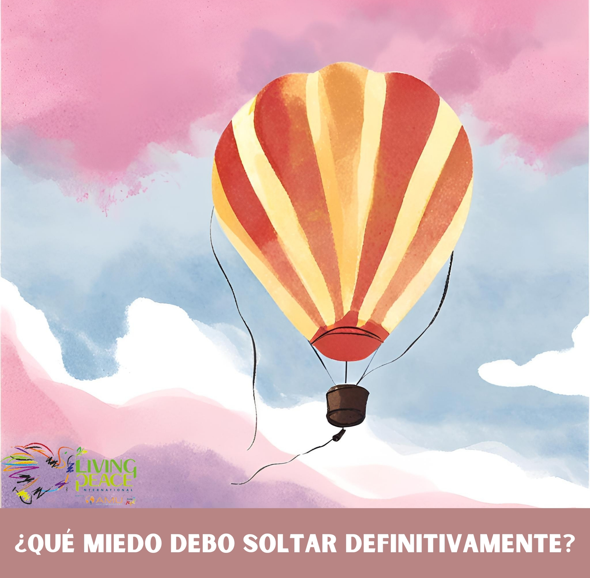

TU DECISIÓN DE PAZ
Soltar el miedo
Vive esta cara como una acción concreta de paz.
CONCIENCIA · PARA LA PAZ
Lanza el dado y descubre una invitación para soltar el miedo, abrir posibilidades y actuar con más conciencia.

Vive esta cara como una acción concreta de paz.
LAS SEIS CARAS
Pulsa una tarjeta para convertir una intuición interior en una decisión concreta.
“La paz de la conciencia comienza cuando dejamos el miedo y elegimos vivir con libertad interior.”
Libertad · Decisión · Vida